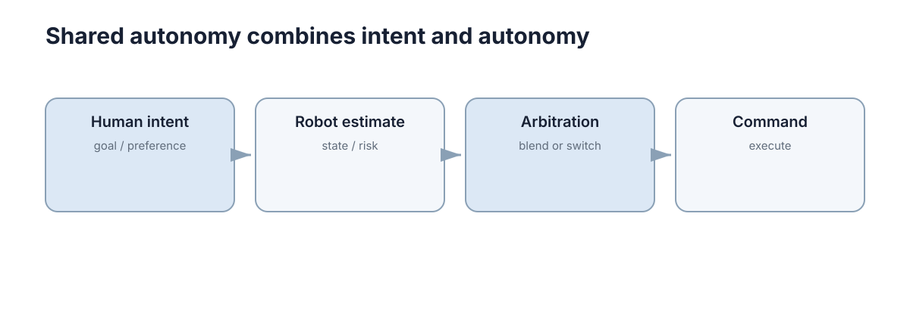

Shared Autonomy
共享自主（Shared Autonomy）不是人和机器“各控制 50%”，而是让人保留目标和意图，自动系统负责补足稳定性、安全性或精细动作，并根据场景动态调整控制权。

它的价值来自一个事实：在遥操作中，人的决策速度受限于注意力与手眼协调，而机器在高频精度上远强于人。把两者按层级而不是按比例组合，才能同时获得人的判断力和机器的稳定性。
本章回答四个问题：控制权在哪一层融合、融合权重如何调度、融合后如何保证安全、以及如何度量与验收。离散介入点见 Human-in-the-Loop，控制权的完全转移见 Intervention & Takeover。
人和自动系统通常控制不同层级
先定义层级：设控制信号按时间尺度分层，任务目标层、路径轨迹层、姿态力矩层、安全边界层，各层的更新率与主导者不同。 层级分工成立的前提是带宽分离：人的输入更新率通常在 5–10 Hz（人手生理性抖动集中在 0.5–2 Hz），而机器姿态环可运行在 1 kHz，两者相差两个数量级以上。只要满足 \(f_a\gg f_h\)，机器就有能力在人给出的低频意图之间补出连续、平滑的执行，而人不需要感知毫秒级细节。
| 控制层级 | 谁主导 | 时间尺度 | 机器负责什么 |
|---|---|---|---|
| 任务目标 | 人 | 秒–分钟 | 提供候选与风险提示 |
| 路径/轨迹 | 机器为主 | 0.1–1 s | 避障、平滑、可行性 |
| 姿态/力矩 | 机器 | 1–10 ms | 稳定、限幅、抗扰动 |
| 安全边界 | 机器（独立于融合） | 1–10 ms | 强制约束 |
按层级分工的直接好处是冲突最少：只要人和机器操作的层级不同，双方输出就不是同一维度的竞争关系。比如人可以决定“抓哪个物体”，系统负责避障和末端稳定；轮椅用户给出大致方向，系统负责局部避障。
| 组合方式 | 可预测性 | 对参数误差的敏感度 | 典型失效 |
|---|---|---|---|
| 层级分工 | 高 | 低 | 层级归属定义不清 |
| 同层向量叠加 | 中 | 中 | 双方持续对抗 |
| 纯人操作 + 保护层 | 高 | 低 | 人的疲劳与精度不足 |
| 纯自动 + 人监督 | 中 | 高 | 监督负荷与状态丢失 |
| 分工失败模式 | 观测信号 | 修正手段 |
|---|---|---|
| 层级重叠 | 两方在同维度互相修正 | 明确每层的唯一主导者 |
| 带宽错配 | 人在高频环成为瓶颈 | 把高频细节下放到机器层 |
| 层级真空 | 某些状态无人负责 | 为每层指定默认行为 |
层级分工把融合问题从“两个向量怎么混合”变成“每层由谁负责、何时交还”，这正是它与简单加权融合的根本区别。
最简单的融合可以写成加权控制
定义 \(u_h\) 为人的输入、\(u_a\) 为自主建议、\(\alpha\in[0,1]\) 为人的权重，最直接的融合是
其中 \(u\) 是送给执行器的最终指令。\(\alpha=1\) 表示完全由人控制，\(\alpha=0\) 表示完全由自动系统控制，中间值表示两者线性混合。 有效增益可以直接读出：若自动建议为零（\(u_a=0\)），操作者要让输出达到满幅 \(u=1\)，需要给出 \(u_h=1/\alpha\)。取 \(\alpha=0.3\)，操作者需要 3.3 倍的输入幅度才能达到全速，主观感受就是“控制变沉”。这个现象不是 bug，而是线性融合的必然结果，必须在设计中显式承认。
| 融合方法 | 参数含义 | 可预测性 | 参数敏感度 | 计算代价 |
|---|---|---|---|---|
| 线性加权 | \(\alpha\) | 高 | 中 | 极低 |
| 位置混合 | 目标位置权重 | 高 | 低 | 低 |
| 力矩混合 | 期望力矩权重 | 中 | 高 | 中 |
| 势场叠加 | 势场强度 | 中 | 高 | 低 |
| MPC 含人类代价 | 代价权重 | 中 | 高 | 高 |
| 层级分配 | 层级边界 | 高 | 低 | 低 |
混合的维度选择同样重要：位置混合在低速接近时手感最好，速度混合适合中高速巡航，力矩混合适合需要柔顺接触的场景。同一条控制律照搬到不同维度，会得到完全不同的操作感受。
具体地说，在低速段（例如 0.05 m/s 以下）若仍使用速度融合，人的输入 \(u_h\) 会被机器分量主导，表现为“推不动”；此时应切换到位置接口，让人给出的相对位移直接生效。这个切换点应写进设计文档，并与 \(\alpha\) 调度规则一起评审。 真正困难的是 \(\alpha\) 怎么变化，而不是公式本身。风险升高、机器置信度下降时，可以增大人的控制权；人的输入明显危险时，安全层仍可以限制最终动作。一个常见错误是把 \(\alpha\) 写成常数并宣称“人机协作”：常数权重既没有利用机器在不确定场景中的能力，也没有利用人在清晰场景中的效率。
还有一个容易被忽略的约束是 \(\alpha\) 的作用维度必须与被融合的物理量一致：对速度指令使用权重，等价于对速度做缩放；对位置指令使用同一权重，等价于对位移做缩放，两者的手感与稳定性完全不同。设计文档应写明 \(\alpha\) 作用在哪一维，以及该维度上的量纲与限幅。
融合权重的调度规则
把 \(\alpha\) 的调度写成显式规则，是共享自主能否被验收的关键。一个可用的结构是：风险越高、机器越不确定，就越把人推向主导；但变化速率必须受限，以免操作者失去运动预期。
其中 \(\eta\) 是限速系数，\(\alpha_\text{target}\) 由风险与置信度决定。\(\eta\) 的物理含义是时间常数：控制周期为 \(\Delta t\) 时，权重接近目标值的特征时间约为 \(\tau_\alpha\approx \Delta t/\eta\)。取 \(\Delta t=20\) ms，\(\eta=0.1\) 对应约 0.2 s，\(\eta=0.02\) 对应约 1 s。
| 系统状态 | 目标 \(\alpha\) | 备注意义 |
|---|---|---|
| 低风险、高置信 | 0.2–0.3 | 机器主导，人做微调 |
| 高不确定性 | 0.6–0.8 | 明显交还控制权 |
| 接近安全边界 | 由安全层覆盖 | 不论 \(\alpha\) 多大都限幅 |
| 检测到人离开输入设备 | 逐步降到 0.1 并降速 | 避免无输入时的“漂移控制” |
| 限速系数 \(\eta\) | 特征时间 \(\tau_\alpha\) | 主观感受 | 适用场景 |
|---|---|---|---|
| 0.5 | 40 ms | 近似硬切换 | 检测到危险时 |
| 0.1 | 0.2 s | 快速但可感知 | 一般风险变化 |
| 0.02 | 1 s | 平滑、几乎无感 | 置信度缓慢变化 |
| 0.005 | 4 s | 保护动作可能来不及 | 仅用于非安全相关调整 |
最后一行常被忽略：人松手时，\(u_h\) 若被当作零输入参与融合，等同于机器获得了完全控制权；若被当作“保持当前值”，则机器人会沿最后方向持续运动。必须显式定义无输入时的行为，并在代码中写出对应的分支与超时（典型 200–500 ms）。
“人离开输入设备”的检测也需要显式实现：常见判据是连续 300 ms 内输入变化小于噪声带，或手柄压力传感器归零。检测到之后应降速并逐步降低 \(\alpha\)，而不是把零输入当作“保持当前方向”——后者在遥操作中会造成典型的失控漂移。
共享自主必须推断人真正想做什么
摇杆向右不一定意味着用户最终目标就是右侧，可能只是绕开当前障碍。高级共享自主会从一段历史输入估计目标，其形式化描述是目标集合 \(G\) 上的后验
其中 \(u_{1:k}\) 是最近一段输入，\(P(g)\) 是先验（比如当前场景下的可行动目标）。当后验最大概率高于阈值（实践中常取 0.7）时，可以按该目标辅助；低于阈值时应减少而非增加干预。
| 意图推断方式 | 响应速度 | 误判表现 | 适用场合 |
|---|---|---|---|
| 瞬时输入方向 | 最快 | 把避障动作当目标 | 简单方向控制 |
| 输入历史平滑 | 中等 | 对意图切换反应迟钝 | 平稳遥操作 |
| 显式目标选择 | 最慢但最准 | 需要额外交互 | 高风险或精确任务 |
错误帮助的代价通常是不帮助的若干倍：若操作者需要先撤销一次错误辅助再重新输入，纠正时间往往达到被救回时间的 3 倍量级。这解释了为什么低置信度时应退回“不帮忙”。
| 推断失败模式 | 观测信号 | 修正手段 |
|---|---|---|
| 把避障当目标 | 机器人持续偏向障碍一侧 | 区分瞬时输入与目标输入 |
| 目标切换迟钝 | 用户改向后仍沿旧目标 | 缩短历史窗口 |
| 过度帮忙 | 用户频繁反向修正 | 提高辅助触发阈值 |
| 目标僵死 | 场景变化后辅助不变 | 加入场景重构检测 |
一条稳健的实践原则是：当推断置信度低时，退回“不帮忙”而不是按低置信推断去帮忙。错误帮助比不帮助更难纠正，因为操作者必须先把机器拉回来才能继续。
历史窗口长度是这套机制里最关键的可调参数：窗口过短会把避障动作误当目标，过长则对目标切换反应迟钝。实践中常用 0.5–2 s，并按任务节奏在验收阶段重标定；窗口与阈值应作为一组参数一起记录，单独调整其中一个往往只是把失效从一种形式换成另一种。
控制冲突是共享自主最常见的问题
如果人持续左转，而自动系统不断向右修正，人会进一步加大左转输入，双方就形成对抗。解决办法不是隐藏自动修正，而是让规则可预测：哪些区域机器会限制？什么时候会完全交还控制？
冲突可被量化：设人类指令与最终指令的一致率为 \(c\)，定义为
即两路指令同号的采样比例。若 \(c\) 长期低于某一水平（实践中常取 0.7），说明系统正在频繁覆盖人的意图。持续低一致率通常意味着要么辅助规则不合理，要么人的心理模型与系统行为不符。
| 冲突类型 | 观测信号 | 处理方式 |
|---|---|---|
| 方向对抗 | 输入方向与输出方向长期相反 | 降低辅助强度或交还控制 |
| 幅度对抗 | 输入幅度持续增大 | 提高有效增益或限速 |
| 静默覆盖 | 输出被修正但无提示 | 至少提示被覆盖的维度 |
| 迟滞振荡 | 输出在两侧来回跳变 | 加入死区或平滑 |
| 量化指标 | 定义 | 健康区间 | 恶化含义 |
|---|---|---|---|
| 一致率 \(c\) | 同号指令比例 | 0.8–0.95 | 低于 0.7 说明对抗 |
| 力度比 | 平均输入幅度 / 基线 | 1.0–1.3 | 明显大于 1 说明控制变沉 |
| 修正次数 | 每秒反向修正次数 | 低 | 高值说明规则不可预测 |
一致率的健康区间不是越高越好：\(c\to 1\) 意味着辅助几乎从不改变人的指令，此时系统实际上没有提供任何帮助，只是增加了延迟与复杂度。
冲突的成因往往不是算法，而是信息不对称：人看不到机器正在规避的障碍，机器也看不到人正在追踪的目标。因此降低冲突的第一手段是把双方关心的量放进同一个界面——当前最小障碍距离、目标偏差、剩余速度余量三项即可覆盖多数对抗场景。
| 信息共享项 | 减少的冲突类型 | 缺失后果 |
|---|---|---|
| 最小障碍距离 | 方向对抗 | 人误判机器“无故转向” |
| 目标偏差 | 幅度对抗 | 人持续加大输入 |
| 剩余速度余量 | 迟滞振荡 | 人无法预判减速点 |
| 当前辅助强度 | 静默覆盖 | 变化显得随机 |
安全约束应独立于融合权重
无论 \(\alpha\) 取多少，最终命令都应经过速度、碰撞和执行器边界检查。否则“人拥有最高权重”可能直接绕过系统安全底线。
def shared_command(human, auto, alpha, limit=1.0):
u = alpha * human + (1 - alpha) * auto
return max(-limit, min(limit, u))
这段代码的结构比内容更重要：融合在前，约束在后，约束不接受权重参数。任何让安全层依赖 \(\alpha\) 的写法都会引入“人是操舵者所以可以压过安全”这样的隐含假设。 形式上，安全层实现的是一个投影算子：\(u_\text{safe}=\mathrm{Proj}_{\mathcal{U}}(u)\)，其中 \(\mathcal{U}\) 是允许指令集合，由速度上限、关节限位、最小障碍距离等约束定义。投影只依赖当前状态，不依赖 \(\alpha\)、也不依赖人机谁在主导。
| 约束类型 | 检查频率 | 触发后行为 | 是否可被人覆盖 |
|---|---|---|---|
| 执行器限幅 | 每个控制周期 | 截断指令 | 否 |
| 速度上限 | 每个控制周期 | 按比例缩放 | 否 |
| 最小障碍距离 | 10–100 Hz | 减速或停止 | 否 |
| 任务级约束（禁入区） | 1–10 Hz | 拒绝或改道 | 可由有权限者解除 |
第三行的频率差异很重要：安全约束的检查频率必须与被约束动态一样快，否则约束总会晚一步。若融合环运行在 50 Hz 而安全环只在 10 Hz，那么一次 60 ms 的指令变化就可能完全绕过检查。 投影算子还有一个实用性质：多条约束可以依次投影，结果必落在各约束的交集内。但当约束之间互相冲突时（例如“必须保持最小距离”与“必须在限速内到达目标”无法同时满足），系统必须有预设的优先级与放弃条件，否则保护层会在冲突时陷入反复切换。
| 约束冲突情形 | 优先级规则 | 期望行为 |
|---|---|---|
| 距离与进度冲突 | 安全优先 | 减速或停住，放弃进度 |
| 限速与任务时限冲突 | 安全优先 | 超时告警，不由控制器提速 |
| 多条路径约束冲突 | 取交集 | 无可行解时停机 |
验收方式是故障注入：人为把 \(\alpha\) 设为 1、把人的输入设为最大幅值，检查最终指令是否仍满足全部约束。这个测试不依赖对人的行为假设，因此可以在回归测试中自动执行。
仲裁与权限分层
人是最终权威并不等于人的每个输入都直接执行。合理的权限分层如下：
| 层级 | 权限 | 典型机制 |
|---|---|---|
| 意图层 | 人拥有最终决定权 | 目标选择、任务中止 |
| 辅助层 | 机器可修改细节 | 避障、平滑、限速 |
| 保护层 | 机器可否决任何人 | 碰撞、越界、失稳保护 |
保护层之所以能否决人，是因为它的目标是防止不可逆后果，而不是完成任务。承认这一点需要在设计文档里明确写出，否则在实现中它很容易被“用户说了算”的需求覆盖掉。
| 动作 | 意图层 | 辅助层 | 保护层 |
|---|---|---|---|
| 选择目标 | 人决定 | 提供候选 | 可拒绝不可达目标 |
| 修改轨迹 | 人可指定 | 机器主导 | 可强制绕行 |
| 调整速度 | 人可要求 | 机器平滑 | 可强制限速 |
| 停止任务 | 人可发起 | 不参与 | 可强制触发 |
保护层的触发条件必须是可量化的状态判据，例如最小距离低于 0.3 m、速度超过 1.2 m/s、倾角超过安全阈值等。若保护层条件写成“感觉不安全时停止”，它既无法测试也无法在评审中被验证，最终会被实现成一个几乎不触发的死代码。 权限分层还需要处理“谁能解除保护”：保护层一旦触发，解除权限通常只授予承担明确责任的主体，并且必须记录解除原因与时间。缺少这条记录时，保护层会在日常运维中被逐步放宽，直到失去作用。
| 权限动作 | 意图层（人） | 辅助层（机） | 保护层（机） |
|---|---|---|---|
| 设定目标 | 决定 | 提供候选 | 可拒绝不可达目标 |
| 修改细节 | 可要求 | 主导 | 可强制修正 |
| 解除保护 | 需授权并留痕 | 不参与 | 记录解除原因 |
| 中止任务 | 可发起 | 不参与 | 可强制触发 |
必要时清晰切换模式比长期模糊融合更好
如果系统无法可靠推断人的意图，明确进入“人工模式”或“自动模式”可能比不断隐式抢控制更安全。共享自主的目标是降低人的负担，不是让责任边界变得更模糊。
给出一个可操作的判据：设意图预测的长期命中率为 \(p_g\)，错误帮助造成的额外修正时间为 \(t_c\)，纯手工完成时间为 \(t_m\)。当 \(p_g\) 低于约 0.7 时，错误帮助带来的期望额外时间会接近甚至超过它节省的时间，此时应改回显式模式与人工确认。
判断依据可以用意图预测的准确率：若在目标集合上 \(\max_g P(g\mid u_{1:k})\) 的长期命中率低于约 0.7，隐式融合会频繁产生错误帮助，此时显式模式和明确的交接确认更合适。
| 方案 | 适用条件 | 优点 | 代价 |
|---|---|---|---|
| 连续融合 | 意图可推断、环境平稳 | 无交接动作、控制连续 | 参数敏感、易产生对抗 |
| 显式模式切换 | 意图模糊、任务分段 | 责任边界清晰 | 切换瞬间有空档 |
| 混合（模式 + 内部融合） | 高风险且长时段 | 兼顾两者 | 实现与验证复杂度高 |
切换本身也应分层：任务级切换（人重新选择目标）按事件触发，能力级切换（自动↔人工）按预测置信度或风险阈值触发。把两类切换合并到一个按钮上，会造成“按了却没换层”的困惑，而这正是典型的模式混淆来源。
| 切换类型 | 触发条件 | 交接要求 | 失败后果 |
|---|---|---|---|
| 任务级 | 人显式选择新目标 | 仅需确认目标 | 走错路线 |
| 能力级（自动→人） | 置信度或风险越界 | 状态摘要 + 接管确认 | 接管延迟 |
| 能力级（人→自动） | 人显式交还且条件满足 | 目标一致性检查 | 机器沿错误目标执行 |
| 保护级 | 约束被违反 | 无需确认 | 任务中止 |
交接要求中最重要的一条是状态摘要：接管方需要知道当前目标、当前速度与最近一次自动决策的原因，否则接管后的前几秒只能靠猜。摘要的信息结构与 Trust & Explainability 中“行动相关问题”的清单一致，只是压缩到一到两行。 模式切换的代价是把连续问题变成离散问题：切换瞬间必须保证指令源唯一，否则会出现双源并存。相关的空档概率与切换协议见 Interaction & Levels of Automation 与 Intervention & Takeover。
融合权重需要可解释变化
控制权比例若随系统置信度变化，应让操作者能够感知这种变化及其原因。突然增大或减小辅助会破坏人的运动预期。权重调度应限制变化速率，并在接近安全边界时明确提示自动系统正在覆盖哪些输入。 可感知的最低要求是：当前辅助强度、最近一次显著变化的原因、以及被覆盖的输入维度。缺少任何一项，操作者都无法建立稳定的心理模型，也就无法预测自己的输入会产生什么效果。
| 需展示项 | 实现形式 | 缺失后果 | 量化门槛 |
|---|---|---|---|
| 当前辅助强度 | 常驻条形/百分比 | 无法预判输入增益 | 分辨率 0.1 级 |
| 变化原因 | 一行文字或图标 | 变化显得随机 | 变化后 500 ms 内显示 |
| 被覆盖维度 | 高亮对应输入轴 | 用户误判失效 | 覆盖时立即提示 |
| 速率限制 | 参数本身 | 变化过于突兀 | 每 100 ms 变化 ≤ 0.05 |
最后一行给出一个可直接实现的约束：把 \(\lvert \Delta\alpha\rvert\) 限制在每 100 ms 不超过 0.05，对应约 1 s 完成一次从 0.5 到 1.0 的过渡量级，这通常落在操作者不感到突兀、机器又来得及保护的区间内。 展示形式要与控制方式匹配：连续融合适合连续变化的指示（条形、指针），离散模式适合离散指示（标签、图标）。用离散标签表示连续权重，会让操作者误以为系统在两种状态之间跳变，从而做出不必要的覆盖动作。
| 展示设计 | 适配的控制方式 | 误读风险 | 建议做法 |
|---|---|---|---|
| 百分比数值 | 连续融合 | 分辨率过高、难以快速读取 | 数值 + 条形组合 |
| 条形/指针 | 连续融合 | 无方向感 | 标注变化方向 |
| 离散标签 | 显式模式 | 掩盖渐变过程 | 仅用于模式切换 |
| 颜色编码 | 两者 | 色觉差异导致漏读 | 颜色 + 图标冗余 |
另一个常被忽略的维度是历史：操作者需要知道辅助强度正在上升还是正在下降，因为这两种趋势对应的预期输入增益不同。只显示当前值而不显示趋势，会让人在变化期间做出反向修正，进而放大前文提到的闭环过补偿。
可解释性同样适用于“不帮忙”的时刻：当系统判断应减少辅助时，应给出触发原因（置信度下降、接近障碍、输入冲突等），否则操作者会把辅助减弱理解为设备故障，并尝试用更大输入补偿，这恰好会触发下一次更强的保护动作。
共享自主的性能度量
共享自主是否真的有用，必须用成对实验来回答：同一任务、同一操作者、同一场景集合，分别在纯人工与共享自主下测量。辅助增益可以定义为
其中 \(T\) 是任务完成时间。若 \(\Delta_T\) 只有几个百分点，而失败率与认知负荷显著上升，那么这套共享自主在本场景中就是负收益的。
| 指标 | 定义 | 典型目标 | 恶化含义 |
|---|---|---|---|
| 任务完成时间 | 端到端耗时 | 相对纯人工改善 20% 以上 | 辅助在拖慢操作 |
| 碰撞/越界次数 | 安全相关事件 | 显著低于纯人工 | 保护层不生效 |
| 一致率 \(c\) | 同号指令比例 | 0.8–0.95 | 对抗或辅助无效 |
| 路径效率 | 实际路径 / 最优路径 | 1.0–1.3 | 辅助绕行过多 |
| 认知负荷 | 主观评分或次任务指标 | 不高于纯人工 | 辅助增加负担 |
| 度量陷阱 | 机制 | 后果 | 修正 |
|---|---|---|---|
| 只测平均值 | 少数困难场景被平均掉 | 危险场景被掩盖 | 按场景分层报告 |
| 不同受试者对比 | 个体差异大于辅助效果 | 结论不可靠 | 同受试者配对实验 |
| 忽略学习效应 | 后续试验天然更快 | 高估辅助收益 | 随机化顺序、加练习期 |
| 只测成功率 | 不安全但成功的操作被计入 | 鼓励激进策略 | 加入越界与碰撞计数 |
度量设计要覆盖最坏场景，而不是平均场景：共享自主的价值恰恰在于困难情境，用简单场景的平均改善来评估它，几乎总会得出“收益不大”的错误结论。
人机闭环的稳定性
共享自主构成一个闭环：人的输入影响机器输出，机器的修正又反过来改变人的下一步输入。把人简化为增益 \(K_h\)、辅助规则简化为增益 \(K_a\) 的环节，闭环稳定性的粗略判据是开环增益小于 1：
取 \(K_h=0.8\)、\(K_a=0.6\)，乘积 0.48 说明闭环有余量；若辅助增益提高到 2.0，乘积变成 1.6，闭环会表现为过补偿振荡：人输入一次修正，系统过冲，人再反向修正，幅度逐周期放大。
| 参数区间 | 闭环行为 | 观测信号 | 处理 |
|---|---|---|---|
| \(K_hK_a<0.5\) | 平缓、无振荡 | 收敛慢 | 可适当提高辅助 |
| \(0.5\)–\(0.9\) | 响应快、略有过冲 | 轻微超调 | 正常区间 |
| \(0.9\)–\(1.0\) | 临界 | 持续小幅振荡 | 降低增益或加阻尼 |
| \(>1\) | 发散 | 幅度逐周期增大 | 必须降低辅助增益 |
| 振荡来源 | 生成机制 | 修正手段 |
|---|---|---|
| 增益过高 | 辅助修正量大于偏差 | 降低 \(K_a\) 或加平滑 |
| 纯延迟 | 人的感知与动作滞后 | 预测显示或降低辅助带宽 |
| 硬切换 | \(\alpha\) 突变引起过补偿 | 限速调度 \(\eta\) |
| 死区过小 | 微小偏差也被修正 | 加入死区与滞回 |
这类稳定性问题与 Uncertainty & Shift 中的分布外退化有共同点：两者都表现为“正常工况下完全正常、边界条件下突然失控”。因此验收不能只在标称场景下做，必须包含增益被人为上调、感知延迟增大、输入设备读数抖动等扰动工况。
下一步：本章处理连续融合，Human-in-the-Loop 讨论离散的介入点，Trust & Explainability 解释如何让辅助规则被正确理解，Intervention & Takeover 给出控制权完全转移的协议。融合后的强制约束见 Safety Constraints。